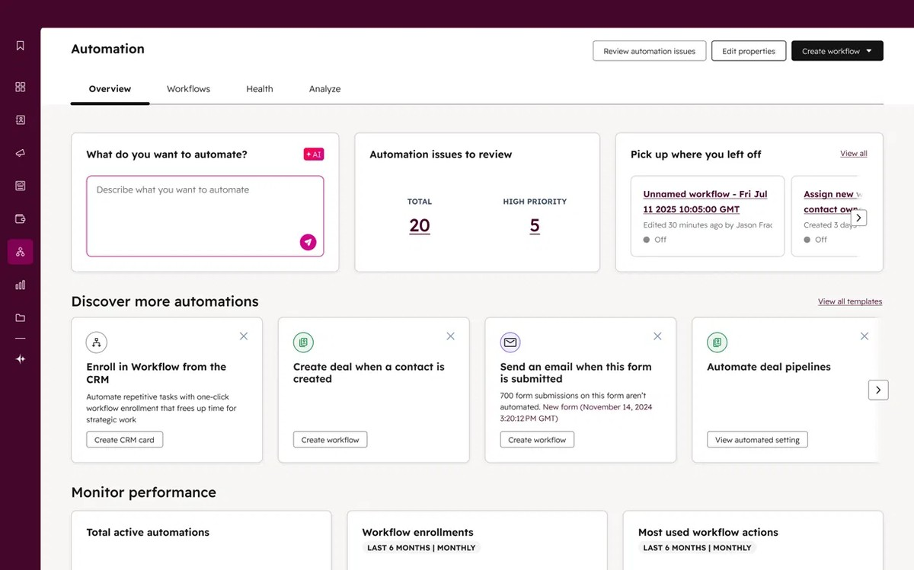

Product designer
Hi, I'm Jason.
I design tools that make complicated workflows feel calm, clear and a little bit warm.
Selected work

HubSpot · B2B CRM · 2026
Redesigning HubSpot's embedded automation
Led design and co-led strategy for HubSpot's Automate panel. 72% of the workflows customers built used features new to Starter, and AI-recommended ones went live at 2× the rate.

HubSpot · B2B CRM · 2025
Building HubSpot's first home page for automation
Led design and co-led the vision for HubSpot's Automation Overview. Monthly visits grew from about 52,000 to 150,000 in a year, passing 2 million total views since launch.
About
I'm a lead product designer at HubSpot, where I work on automation for small businesses. I like starting from research, testing ideas early, and working closely with product and engineering from strategy through launch.